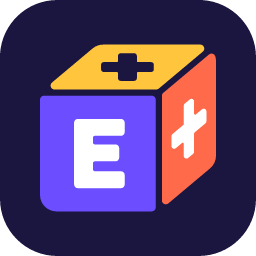
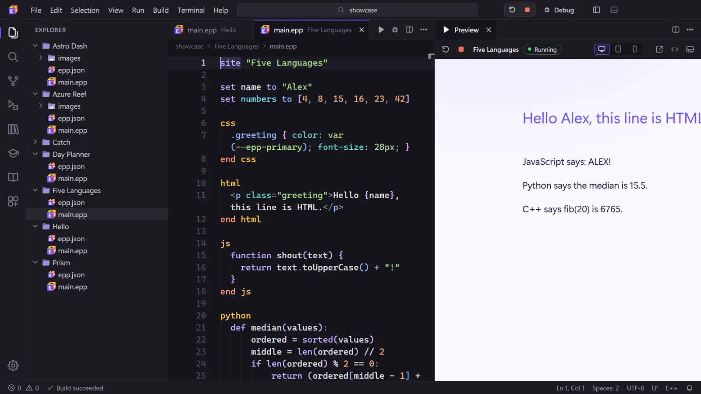
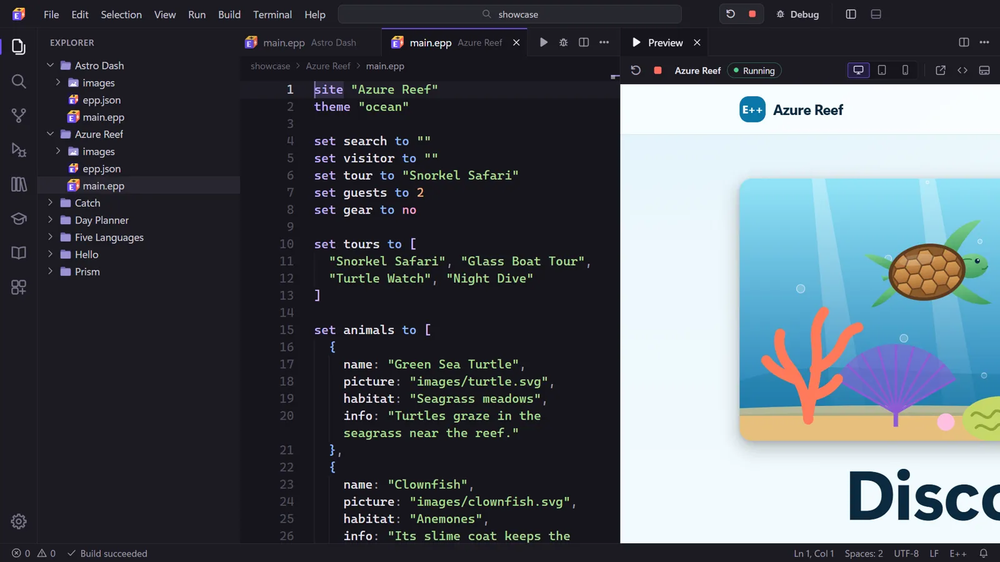
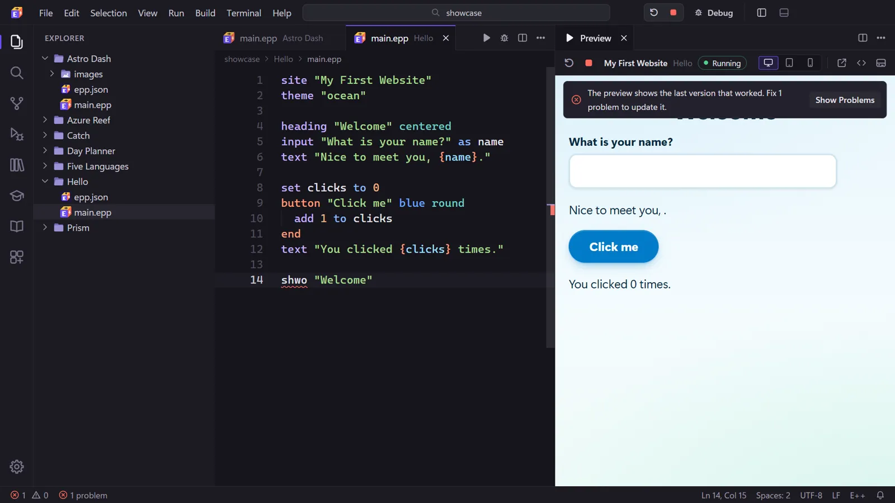
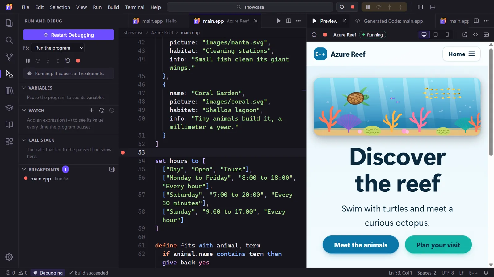
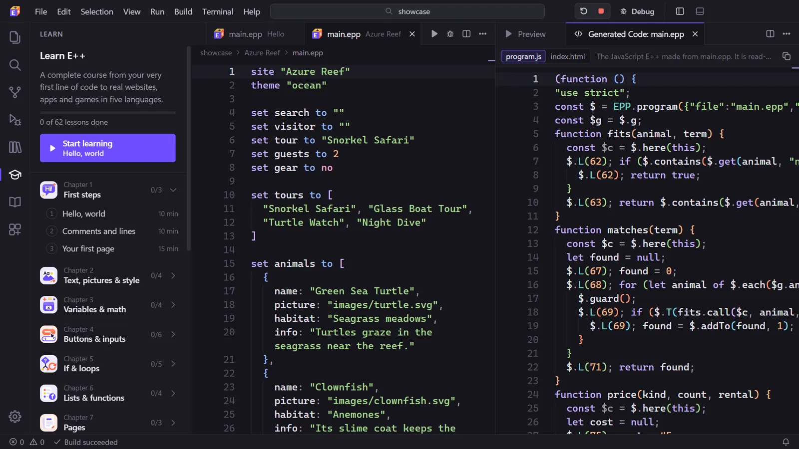
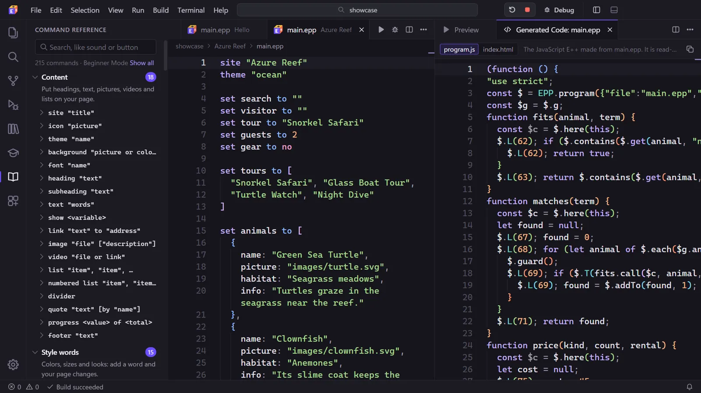
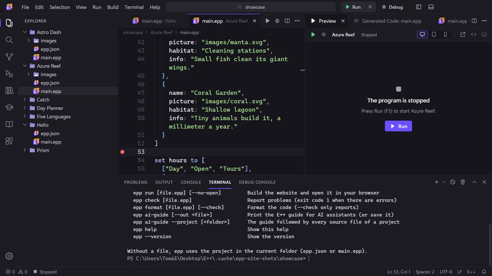
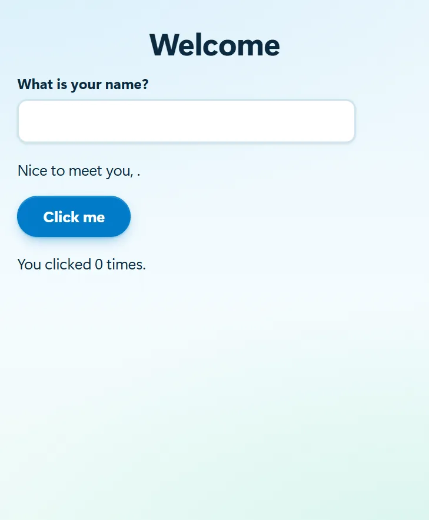

Plain English, few symbols
E++
add 1 to scoreJavaScript
score += 1;
render(score);One command per line. Lists start at 1. Times are in seconds. Rules that make sense the first time.

E++DownloadEnglish++ · by Scred
E++ is a programming language that reads like a sentence. Write button "Click me" and you get a button. Websites, apps and games, from your first line.
What E++ is
E++ is a real programming language for beginners, students and anyone who wants to build for the web without learning five languages first. One command per line. Blocks close with end. No semicolons, no curly braces. It compiles to HTML, CSS, JavaScript and WebAssembly, so the finished site opens with a double-click and runs anywhere.
Why it is good
add 1 to scorescore += 1;
render(score);One command per line. Lists start at 1. Times are in seconds. Rules that make sense the first time.
text "Clicks: {clicks}"el.textContent =
"Clicks: " + clicks;Text that shows a variable changes when the variable changes. Inputs fill their variables while you type.
Every message names the line and suggests the fix. In E++ Studio one key press (Ctrl+.) applies it.
wait 2
say "Done!"await new Promise(r =>
setTimeout(r, 2000));No callbacks, no promises, no await. The page keeps working while your code waits.
Export a project and you get a normal website you can upload anywhere. Nothing to install for your visitors.
Ten languages, one file
html, css, js, typescript, python, c++, c, sql, lua and php blocks live in the same .epp file and share variables and functions with E++.

pythondef median(values): ordered = sorted(values) ... end pythonc++long long fib(int n) { return n < 2 ? n : fib(n-1) + fib(n-2); } end c++
Python says the median is 15.5.
C++ says fib(20) is 6765.
E++ Studio






Press F5 and your website, app or game runs next to the code. Change a word and the preview updates while you type. Switch the preview to tablet or phone size in one click.
Problems show while you type, with the line and a suggestion. Ctrl+. applies the fix and the preview runs again.
Breakpoints, Variables, Watch, Call Stack, Step Over, Step Into. A real debugger for a beginner language.
18 chapters from the first line of code to games and programs in several languages. Every lesson ends with a challenge that Studio checks for you, with hints when you are stuck.
Look up any command, see it work in the preview and insert it into your code.
File explorer, tabs, a command palette, find in files, Git, a terminal with the epp command, libraries and export to a finished website.
Code examples
Pick one. The code types itself, the result is a real screenshot from E++ Studio.

Gallery
Tap a picture to open it.
Free. Windows 10 and 11, 64-bit. Includes the course, the command reference, the examples and the epp command-line tool.
Download E++ StudioSetup 1.0.0 · .exeOn a phone? Save the link and open it on your PC. E++ Studio runs on Windows.
How to install
Yes. E++ and E++ Studio are free and MIT licensed.
No. E++ is made for your first line of code. The Learn course starts from zero and every lesson has a challenge that Studio checks.
Websites with several pages, apps that save data, games with sprites, gravity and controls, charts, music and drawings. When you need more, use HTML, CSS, JavaScript, Python, C++ and other languages in the same file.
E++ compiles to HTML, CSS, JavaScript and WebAssembly. Export Website gives you a folder that opens with a double-click and can be uploaded to any web host.
No. Settings, progress and caches stay in the E++ Studio folder. Python, the C++ tools and the Android NDK are optional components that Studio downloads only when you ask for them (File > Preferences > Components).
Yes: "E++ Studio Setup 1.0.0.exe" /S /D=C:\Apps\E++ Studio. Uninstall from Windows Apps or with /S on the uninstaller.
Yes. E++ ships a guide for AI (llms.txt) and Studio has Copy E++ Guide for AI, so any assistant can write correct E++.
E++ Studio is a Windows app. The websites and games you make with it run in any browser, on phones too.